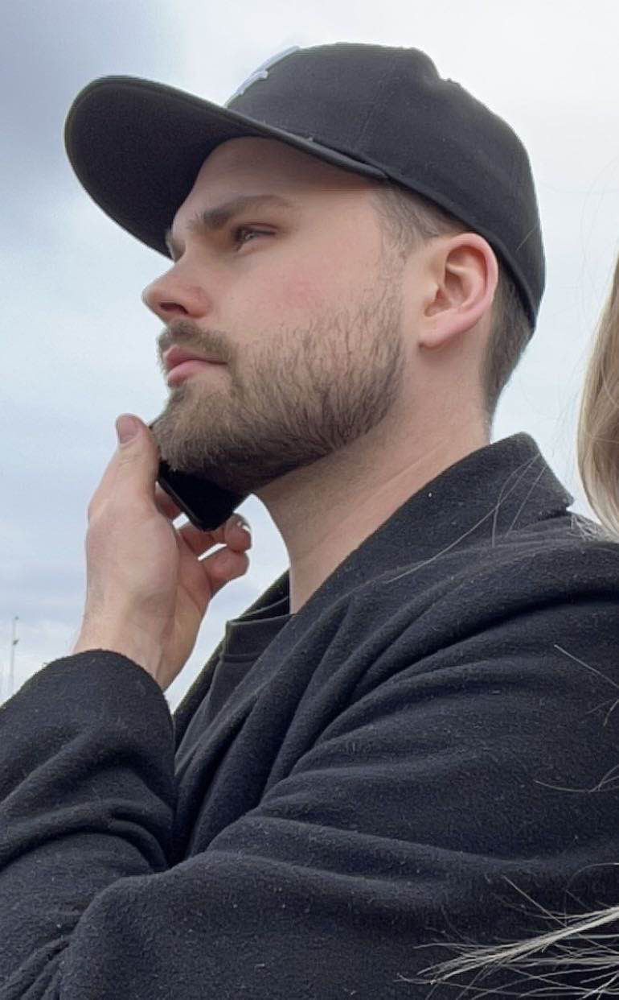
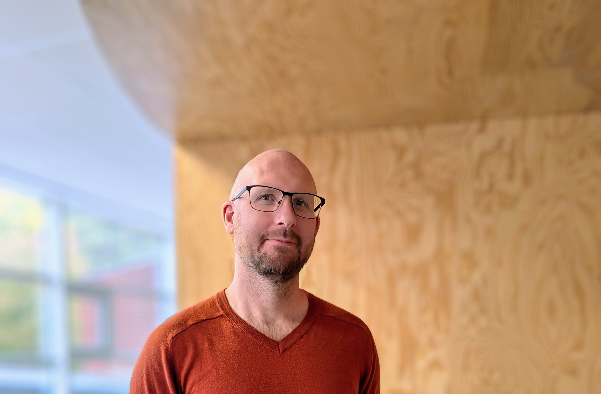
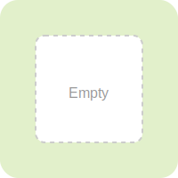

Peace, love & go locco
Game Case Study
An in-depth analysis of game design and user experience
Overview
Peace, Love and Go Loco is a retro-inspired 2D platformer that combines classic side-scrolling mechanics with a modern, humorous twist. Players guide a laid-back hippie through colorful worlds filled with obstacles, hidden surprises, and a unique "trip system" where mushrooms transform the environment into dreamlike or darker variations. These magical mushrooms not only change the world around you but can also grant extra lives, adding a strategic element to exploration. The target audience is players aged 12 and above who enjoy playful platformers with a fresh, surreal identity. The unique selling point lies in its mix of nostalgia, humor, and dynamic level variations.


Purpose
The goal of this project was to explore how UX design can enhance accessibility and engagement in a small-scale indie game. The case study aims to show how structured design methods, user testing, and visual identity contribute to a game that is simple to play but hard to put down.
Project Scope
The project was carried out in three weeks as a portfolio production using the Double Diamond process. We moved from discovery and definition of ideas to development and delivery of a prototype. The scope included creating a core concept, designing mechanics and rules, and prototyping an alpha version in Unreal Engine that could be tested by real players.
Team Composition
The team consisted of five members: myself as project manager and four designers. Together we handled concept development, visual direction, mechanics, and implementation. Workshops and collaborative sessions ensured that each role contributed directly to the game's identity.

Research
To understand player needs, we conducted a small user test group ranging from ages 19 to 40. We also carried out a competitor analysis of similar platformers such as Rayman Origins, Psychonauts, and Wario Land. Market trends revealed a demand for lighthearted, visually striking platformers that stand out in a crowded indie market. Feedback confirmed that humor and unexpected mechanics were strong points to emphasize.
Personas
From the research, we developed a persona representing a casual gamer in their 20s who enjoys fun, easy-to-grasp mechanics and appreciates humor in games. This persona guided our decisions on difficulty, tone, and overall player experience.
Tools & Documentation
Throughout the project we documented our process using Figma for early design sketches, Figjam for idea boards and workshops, and Unreal Engine for building the prototype. This combination of tools allowed us to move efficiently between ideation, design, and implementation while keeping the whole team aligned.
Wireframes & Prototypes
Before building the prototype in Unreal Engine, we sketched out early wireframes in Figma to explore level layouts, character placement, and menu navigation. These low-fidelity sketches helped us visualize the player flow and identify potential issues before moving into development. A Crazy Eight workshop was also used to quickly generate multiple variations of how the game could look and feel.


Interaction Design
The interaction patterns are straightforward, relying on intuitive movement, jumping, and collecting. Players can easily navigate through menus and levels without instructions, thanks to a familiar control scheme and a clear visual flow. The trip-system introduces variety without overwhelming the player, making the game engaging while keeping controls simple.
Summary
Peace, Love and Go Loco was an opportunity to explore how UX methods can shape not only usability but also the playful identity of a game. From discovery workshops to an Unreal Engine prototype, the project demonstrates how structured design, iteration, and humor can create a unique and engaging platformer experience. For future projects, I would ensure even earlier user involvement and more structured accessibility features.

Visual Design & Usability
The visual identity draws on colorful 8-bit inspiration with a psychedelic twist. Dreamlike "good trip" worlds feature bright palettes and soft shapes, while "bad trip" variations create darker, more chaotic environments. The UI is designed to be minimal, letting the art direction and typography support readability and atmosphere.

Usability Testing
We tested the prototype within the team and later with external users. Feedback highlighted issues such as unnatural gravity, mirrored character movement, and bugs with platforms. Despite these challenges, players consistently described the game as humorous and fun. Iterations were made to improve jumping mechanics and remove problematic features.
Accessibility
The game was designed to be easy to pick up, with straightforward controls and visual clarity. Even in early stages, the goal was to make it approachable for a wide audience by focusing on readability and inclusive design choices.
Design Challenges & Solutions
One of the biggest challenges was balancing simplicity with innovation. Players needed familiar mechanics to feel comfortable, while the trip-system added complexity. By iterating quickly and testing frequently, we refined the experience without losing accessibility. Removing unnecessary mechanics, like moving platforms that caused frustration, improved flow and enjoyment.
Impact & Insights
Player reactions during testing were positive, with laughter and curiosity being common responses. Most users said they would consider playing the game if released. The most important lesson was how valuable quick iteration and user feedback are in refining a fun yet usable game experience. Humor and visual identity proved to be strong motivators for engagement.
Future Outlook
Future updates could include expanded accessibility options, refined physics, and extended levels. A better and clearer onboarding experience would help new players understand the mechanics faster, while focusing on smoother gameplay flow could make the game even more engaging. Community building and playtesting will be key for improving the game further and ensuring it reaches the right audience.
The Team
Felicia

Juliette

Matheus
Patrik
Ida
Acknowledgment
We would like to thank Victor Åhs Blomberg, our teacher at the Futuregames Experience Design program in Karlstad. Your guidance and constructive feedback have been invaluable throughout this project. You encouraged us to explore new perspectives and supported us in developing this case study into a more refined and insightful piece of work.